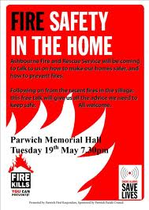
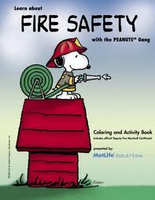

Fire is the rapid oxidation of a material in the chemical process of combustion, releasing heat, light, and various reaction products. Slower oxidative processes like rusting or digestion are not included by this definition.
The flame is the visible portion of the fire and consists of glowing hot gases. If hot enough, the gases may become ionized to produce plasma. Depending on the substances alight, and any impurities outside, the color of the flame and the fire's intensity might vary.
A fire department or fire brigade is a public or private organization that provides fire protection for a certain jurisdiction, which typically is a municipality, county, or fire protection district. A fire department usually contains one or more fire stations within its boundaries, and may be staffed by career firefighters, volunteers, or a combination thereof.
Fire in its most common form can result in conflagration, which has the potential to cause physical damage through burning. Fire is an important process that affects ecological systems across the globe. The positive effects of fire include stimulating growth and maintaining various ecological systems. Fire has been used by humans for cooking, generating heat, signaling and propulsion purposes. The negative effects of fire include decreased water purity, increased soil erosion, an increase in atmospheric pollutants and an increased hazard to human life.
The fire safety issue is extremely important. Every year, more than 56000 household fires are reported in the UK and more than 360 people die in these fires. One in ten of these fire victims are children. However, safety is not an issue that comes to our minds very often, as we go about our daily routine. Yet, in our homes, there may be dangers that can take lives and destroy our properties.

Fire safety refers to precautions that are taken to prevent or reduce the likelihood of a fire that may result in death, injury, or property damage, alert those in a structure to the presence of a fire in the event one occurs, better enable those threatened by a fire to survive, or to reduce the damage caused by a fire. Fire safety measures include those that are planned during the construction of a building or implemented in structures that are already standing, and those that are taught to occupants of the building.
Threats to fire safety are referred to as fire hazards. A fire hazard may include a situation that increases the likelihood a fire may start or may impede escape in the event a fire occurs.

Fire safety is often a component of building safety. Those who inspect buildings for violations of the Fire Code and go into schools to educate children on Fire Safety topics are fire department members known as fire prevention officers. The Chief Fire Prevention Officer or Chief of Fire Prevention will normally train newcomers to the Fire Prevention Division and may also conduct inspections or make presentations.Fire prevention programs may include distribution of smoke detectors, visiting schools to review key topics with the students and implementing nationally recognized programs such as NFPAs "Risk Watch" & "Learn not to burn".